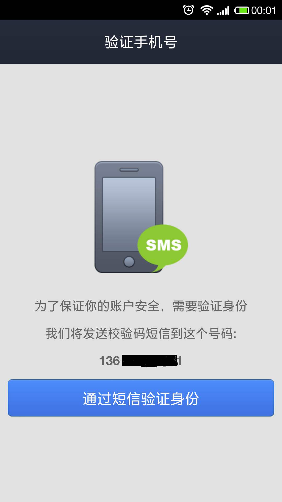
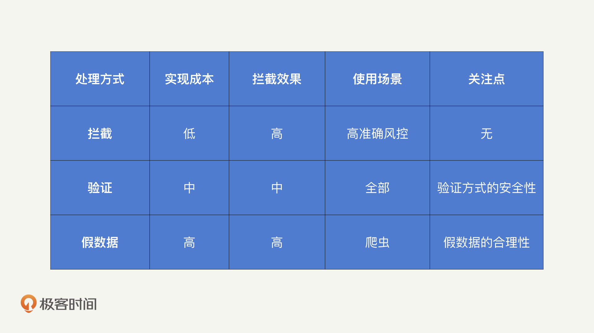
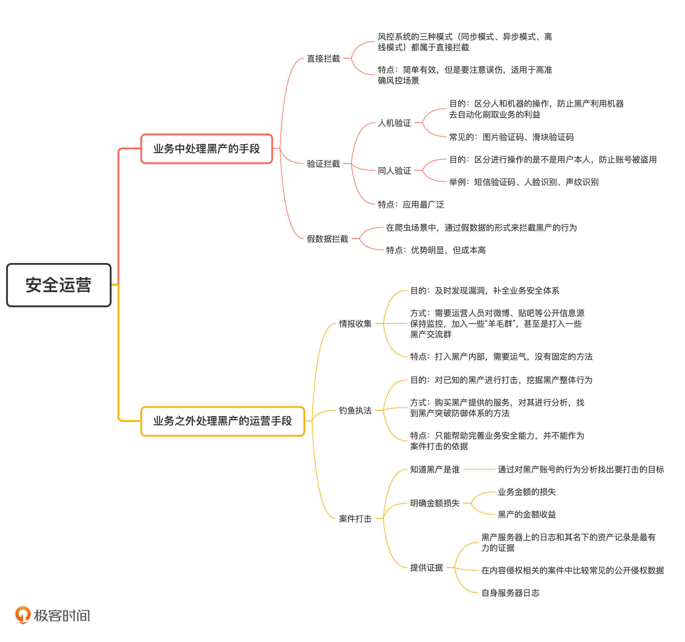

- 00 开篇词 别说你没被安全困扰过.md.html
- 01 安全的本质：数据被窃取后，你能意识到问题来源吗？.md.html
- 02 安全原则：我们应该如何上手解决安全问题？.md.html
- 03 密码学基础：如何让你的密码变得“不可见”？.md.html
- 04 身份认证：除了账号密码，我们还能怎么做身份认证？.md.html
- 05 访问控制：如何选取一个合适的数据保护方案？.md.html
- 06 XSS：当你“被发送”了一条微博时，到底发生了什么？.md.html
- 07 SQL注入：明明设置了强密码，为什么还会被别人登录？.md.html
- 08 CSRF_SSRF：为什么避免了XSS，还是“被发送”了一条微博？.md.html
- 09 反序列化漏洞：使用了编译型语言，为什么还是会被注入？.md.html
- 10 信息泄露：为什么黑客会知道你的代码逻辑？.md.html
- 11 插件漏洞：我的代码看起来很安全，为什么还会出现漏洞？.md.html
- 13 Linux系统安全：多人共用服务器，如何防止别人干“坏事”？.md.html
- 14 网络安全：和别人共用Wi-Fi时，你的信息会被窃取吗？.md.html
- 15 Docker安全：在虚拟的环境中，就不用考虑安全了吗？.md.html
- 16 数据库安全：数据库中的数据是如何被黑客拖取的？.md.html
- 17 分布式安全：上百个分布式节点，不会出现“内奸”吗？.md.html
- 18 安全标准和框架：怎样依“葫芦”画出好“瓢”？.md.html
- 19 防火墙：如何和黑客“划清界限”？.md.html
- 20 WAF：如何为漏洞百出的Web应用保驾护航？.md.html
- 21 IDS：当黑客绕过了防火墙，你该如何发现？.md.html
- 22 RASP：写规则写得烦了？尝试一下更底层的IDS.md.html
- 23 SIEM：一个人管理好几个安全工具，如何高效运营？.md.html
- 24 SDL：怎样才能写出更“安全”的代码？.md.html
- 25 业务安全体系：对比基础安全，业务安全有哪些不同？.md.html
- 26 产品安全方案：如何降低业务对黑灰产的诱惑？.md.html
- 27 风控系统：如何从海量业务数据中，挖掘黑灰产？.md.html
- 28 机器学习：如何教会机器识别黑灰产？.md.html
- 29 设备指纹：面对各种虚拟设备，如何进行对抗？.md.html
- 30 安全运营：“黑灰产”打了又来，如何正确处置？.md.html
- 加餐1 数据安全：如何防止内部员工泄露商业机密？.md.html
- 加餐2 前端安全：如何打造一个可信的前端环境？.md.html
- 加餐3 职业发展：应聘安全工程师，我需要注意什么？.md.html
- 加餐4 个人成长：学习安全，哪些资源我必须要知道？.md.html
- 加餐5 安全新技术：IoT、IPv6、区块链中的安全新问题.md.html
- 模块串讲（一）Web安全：如何评估用户数据和资产数据面临的威胁？.md.html
- 模块串讲（三）安全防御工具：如何选择和规划公司的安全防御体系？.md.html
- 模块串讲（二）Linux系统和应用安全：如何大范围提高平台安全性？.md.html
- 结束语 在与黑客的战役中，我们都是盟友！.md.html
- 捐赠
30 安全运营：“黑灰产”打了又来，如何正确处置？
你好，我是何为舟。
在前面的课程中，我们介绍了IPDRR的前三个部分，并且着重讲解了风控系统的框架、算法以及设备指纹的相关技术。学会了这些机制和手段，你已经能够识别出大部分的黑产了。那我们是不是可以直接将识别的结果抛给业务，让业务自行处理呢？
在一个专业的业务安全方案中，这当然不可以。因为，识别出黑产仅仅是第一步，采取合适的手段处理黑产，才是业务安全长治久安的根本。
那么，针对黑产的处理，我们有三个参照原则：
- 采取适当的拦截策略，防止黑产快速绕过业务安全策略
- 给予一定震慑，防止黑产变本加厉
- 保持情报收集，做好和黑产持续对抗的准备
今天，我们就结合这三个原则来看一下，有哪些运营手段可以对业务安全起到正向作用，切实打击黑产。
业务中处理黑产的手段
在识别出黑产之后，运营的第一步一定是在业务中对黑产进行处理。处理的手段有很多种，它们能起到的效果也截然不同。接下来，我们就来具体分析一下这些手段的特点和它们能产生的效果。
1. 直接拦截
在27讲中我们讲过，在不同的识别模式下，黑产的拦截方案也不同：同步模式下，我们可以直接拒绝黑产的当次登录请求；异步和离线模式下，我们可以拒绝对应的账号在登录后继续使用业务。这都属于直接拦截，拦截之后，黑产都将无法继续使用业务，自然也就无法对业务产生任何影响了。
尽管直接拦截的方案简单有效，但是我们依然需要注意，因为出现误伤而损伤用户体验的问题。因此，通常只有在风控识别准确度较高的时候，我们才会采用直接的拦截处理。
2. 验证拦截
验证黑产的方式有两种：人机验证和同人验证。
首先是人机验证。
人机验证的目的是区分人和机器的操作，防止黑产利用机器去自动化刷取业务的利益。
人机验证的验证码，你应该很熟悉，最常见的是图片验证码。在进行图片验证的时候，我们可以轻易地认出变形后的数字和字母，但是机器却不能。
不过，随着深度学习的发展，图像识别技术越来越准确，图片验证码已经不那么可靠了。近几年比较流行的滑块验证码。
在进行滑块验证的时候，会要求我们拖动滑块滑至目标点。但是人在滑动过程中不可能匀速直线运动，所以滑动轨迹在速度、方向等特性上会存在一定的波动，而机器则会产生笔直的滑动轨迹。通过这个特征，我们就可以来判定是人还是机器在拖动滑块。
说完了人机验证，我们再来说说同人验证。
同人验证主要是区分进行操作的是不是用户本人，防止账号被盗用。
比如，当我们异地登录邮箱的时候，网站经常要求我们进行短信验证。这是因为我们的登录操作，被同步模式下的风控系统判定为可疑，所以网站才会通过短信来验证你是不是本人在操作。

除了短信验证还有很多常见的产品方案，比如：异地登录的时候，微信会要求你从一堆用户列表中找出你的好友；美团会要求你从一堆订单中找出自己下过的订单等。
另外，像人脸识别、声纹识别这种基于生物信息的验证方式，也进一步丰富了同人验证的方式。并且，因为其极优的用户体验感，目前各大应用都重点采用了它们。
因为验证不会阻拦正常用户使用业务，而且，即使出现误伤，验证能产生的影响也相对较小，因此它使用的场景更加广泛。
但是，是否选择验证方式进行拦截，还要取决于验证方式本身的安全性，也就是验证方式是否能够起到阻拦黑产的效果。如果黑产能够以较低的成本通过验证，就起不到任何的拦截效果和作用了，也就不是最佳拦截方案。
3. 假数据拦截
直接拦截和验证拦截都是生活中比较常见的拦截方式，那这里，我再讲一种在爬虫场景中比较常见的拦截方式，就是通过假数据的形式来拦截黑产的行为。
比如说，像是酒店、机票这样的业务，通常会尝试去爬取竞争对手的价格数据，让自己的价格在竞争中更占优势。所以，当风控识别到请求是来自于爬虫的时候，会直接返回一个虚假的价格数据，来误导爬虫。
针对爬虫场景，我们之所以不采用直接拦截或者验证拦截的方式，就是因为这些拦截方式会被爬虫发现，然后爬虫就会想尽办法绕过这两种方式。但是，如果使用假数据，爬虫可能认为自己已经成功爬取了数据，就不会特意绕过了。
而且，在抓取业务数据的过程中，爬虫并不会直接攻击业务的正常流程。所以，这些假数据被爬取，并不会给我们造成任何损失。
尽管优势非常明显，但是使用假数据的成本很高。这是因为，机票和酒店这样的业务中都会有成千上万的价格数据，如何设置一个合理的假数据，使其既不明显偏离正常值，被爬虫发现，又不过度接近真实值，泄露机密信息。这必然需要业务方投入足够的精力来设置。
为了帮助你理解这三种拦截手段，我把它们的特点总结成一张表格，供你参考。

总结来说，风控系统识别到黑产之后，可以在业务中采取拦截、验证和假数据的形式处理。相比较而言，验证是适用范围最广的处理方式，我们可以根据不同的场景需求和风控的准确性，选取不同的验证方式。
业务之外处理黑产的运营手段
所谓知己知彼，百战不殆，想要做好业务安全，除了在业务中采取合适的手段处理黑产以外，我们还需要了解黑产。这就需要我们采取一些业务之外的运营手段去获取黑产的信息，有的时候，业务之外的运营手段甚至可以从根本上铲除黑产。常见的运营手段有3种，分别是情报收集、钓鱼执法和案件打击。下面，我们一一来看。
1. 情报收集
掌握和了解黑产的动向和手段，是做好业务安全防御的必要基础。情报收集需要运营人员对微博、贴吧等公开信息源保持监控，加入一些“羊毛群”，甚至打入一些黑产交流群。
通过这些方式，你就能够知道外界是否对你的业务发起了攻击，从而及时发现漏洞，补全业务安全防御体系。
2. 钓鱼执法
情报收集需要我们打入黑产内部，但是打入内部需要一定的运气，并没有什么固定的方法能够帮助我们找到黑产团伙。因此，面对狡猾的黑产，我们可以采取钓鱼执法这样的手段。
比如说，在微博上，你经常会看到有人提供买小号、买粉丝这样的服务。毫无疑问，这些服务对业务来说是非法的。那业务安全就需要知道这些黑产是如何突破防御体系，进而发起攻击的。
这个时候，钓鱼执法就是一个非常有效的方案了。举个例子，我们可以花钱去买一批小号，这样，我们就得到了一批被黑产掌握的账号，然后就可以去分析这些账号的历史行为了。
具体怎么分析呢？比如，我们可能会发现这批账号都在某一个时刻修改了密码，那么，我们就可以推测这些账号是在这个时刻被盗号的。在明确了盗号的时间和方式之后，你就可以有针对性地分析当时的数据情况，从而能发现黑产突破业务安全的防御体系的方式，然后有针对性地去完善即可。
这里有一点需要你注意，钓鱼执法的结果只能够帮助你完善业务安全能力，并不能作为案件打击的依据。如果你想要对这类已知的黑产进行打击，就必须基于钓鱼获得的部分信息，去挖掘出黑产整体的行为，才能够找到被法律认可的犯罪事实。
3. 案件打击
随着《网络安全法》的推出，国家对于安全的把控越来越严格，各地的网安、网信办等机构，都纷纷出手开始打击黑产团伙。因此，对于业务运营来说，借助法律方式打击黑产也是一个十分有效的方案。比如去年微博成功打击的“星援”案件，就是警方直接抓捕了刷明星热度的一伙黑产。
那接下来，我就结合这个案件和你一起分析一下，想要成功发起一次案件打击，需要具备的基础条件。
首先，想要打击黑产，你得知道黑产是谁。你可能会认为这是警方的工作。但事实上，警方不熟悉你的业务，无法接触你的系统，排查起来会很困难。因此，通常需要由业务人员找出打击的目标是谁，再交由警方进行后续的处理。
比如，微博业务人员先是发现有人在刷转发、评论、点赞等，然后基于对这些账号的行为分析和用户的访谈，发现这些操作是由“星缘”这款App产生的，而“星缘”App又对应到了一家公司。排查到这里，警方就可以对这家公司进行线下抓捕和打击了。
其次，你要明确业务损失的金额或者黑产的收益金额。因为法院的最终判决主要还是依靠直接金额的大小，只有金额明确了，你才能够推动警方去协助你打击黑产。
现金类业务（如：红包、优惠券、支付等）的金额很好衡量，我们直接统计黑产成功获取的金额即可。但是，对于非现金类的业务（如：登录、评论等），我们无法准确地衡量一个用户或者一次评论的价值，因此很难给出一个可信的金额损失数目。
这个时候，我们可以通过黑产的收益来评估，比如黑产通过盗号或者刷评论，赚取了多少收益。这些收益属于非法收益，可以用来作为法院评判犯罪事实的参考依据。
在“星缘”一案中，最终评判的依据就是黑产通过提供非法服务获利上百万元。
最后，当你找到了目标、明确了损失的金额之后，你还要提供证据。但是对于网络犯罪来说，需要提供什么样的证据，其实是一个相对模糊的部分。尽管如此，我还是根据经验总结了3种常见的证据形式。
1.黑产服务器上的日志和其名下的资产记录是最有力的证据，它们是由警方实施抓捕后获得的信息，因此具备极高的可信度。同时，黑产的日志也能够直接表明它们的所作所为，不存在任何狡辩的空间。
2.在内容侵权相关的案件中比较常见的公开侵权数据。比如，竞争对手的信息流中，出现了自家公司生产的内容，这就是竞争对手采取恶意手段爬取我方数据，侵犯我方版权的明确证据。
3.自身服务器日志。在案件打击过程中，公司也同样需要提供一份日志作为黑产发起攻击的证明。在大部分的案件打击中，前两种证据已经能够提供直接证明了，公司提供的自身服务器日志，更多的是为警方办案提供辅助支持。
总结
好了，今天的内容讲完了。我们一起来回顾一下，你需要掌握的重点内容。
和基础安全一样，运营工作对于业务安全的长期发展意义重大。业务安全中的运营工作主要分为两个方面：业务中的黑产处理和业务之外对黑产信息的挖掘和打击。
在业务中处理黑产时，我们采取更加间接的方式，比如，验证码和返回假数据，能够大大降低风控误伤对正常用户的影响，同时也能够增加黑产绕过风控的难度。
在业务之外，通过情报收集和钓鱼执法，能够为风控系统提供持续的数据支撑，帮助风控系统完善自身的策略。除此之外，还能够通过司法手段，对黑产实施线下打击，从根本上打击黑产的嚣张气焰。

思考题
最后，我们来看一道思考题。
除了我今天讲的这几种验证方式，你还见过哪些验证方式，它们的用户体验和难度如何？你能够想办法自动化地进行验证吗？
欢迎留言和我分享你的思考和疑惑，也欢迎你把文章分享给你的朋友。我们下一讲再见！
© 2019 - 2023 Liangliang Lee. Powered by gin and hexo-theme-book.